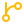
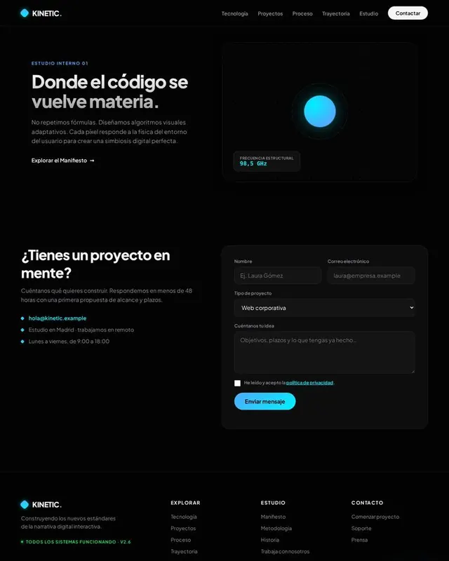

Fast, responsive and accessible websites: every design gets special care.
SEO optimization
Design that adapts to any device
Accessible to everyone
No unnecessary dependencies, high performance
/* No classes: every tag by its name */
a {
text-decoration: none;
color: var(--tinta);
}
main > section:first-of-type > figure {
aspect-ratio: 1;
border-radius: 50%;
}
section:nth-of-type(2) article:hover {
translate: 0 -4px;
}
Chat with my AI assistant
AI tools that make everyday questions easier and make it simpler to get in touch with me.
A warm palette for a dog boarding house
Cream #FBF5EC, orange #E8742C and a brown #3B2A20 for the text.
And a typeface to match?
A soft serif for headings and a very readable sans for body text.
Send me a quote!
Ideas in minutes thoughtful decisions and hand-written code.
UX / UI
Clear interfaces, color and type systems chosen with care.
#FFBB00
#FF6A88
#8B5CF6
#22D3EE
#F5FFF4
Az Za

Git & GitHub
Organized versions and continuous deployment.
Commits per weekThis week
Data, video and automation
I structure and connect the data that powers a website, edit video and build workflows that save hours.
DatabasesForms to emailVideo editingAutomated workflows
SQL
JSON
API
Video
Forms
Git
02 — Gallery
Recent work
Templates I've designed and coded for All Pixels. Spin the carousel, filter them and open them full size or live.
allpixels.dev/demo/kinetic

Creative studio · Portfolio
KINETIC
A dark website for a digital studio: a hero with a sphere of light, animated figures and a project form.